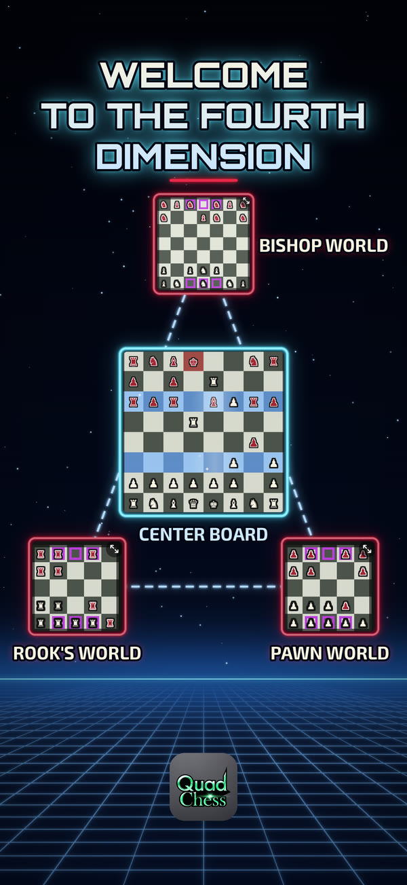

Fourth Dimensional Chess

Quad Chess is chess with four boards in play at once. A regular 8x8 chess board sits in the center, surrounded by three triangle worlds:
Fight your way to the Morph Tunnel squares on your opponent's back row of a triangle world, and your piece slides down the tunnel onto the center board's landing row. Tunnels are one-way, so every trip counts.
It's a two-player game on one iPhone: pass the phone back and forth. Player 1 plays Ivory and Player 2 plays Crimson. Checkmate the king, or capture it, on the center board to win.
Questions, a bug, or an idea? Email us and include your iPhone model and what happened. We read every message.
mrlogistics4congress@icloud.com
Our plan for the future is a real, tabletop Quad Chess: three triangle boards built around a regular chessboard, sold together as one complete Quad Chess (Fourth Dimensional Chess) unit. It's not available yet. We'll share news here when it is.